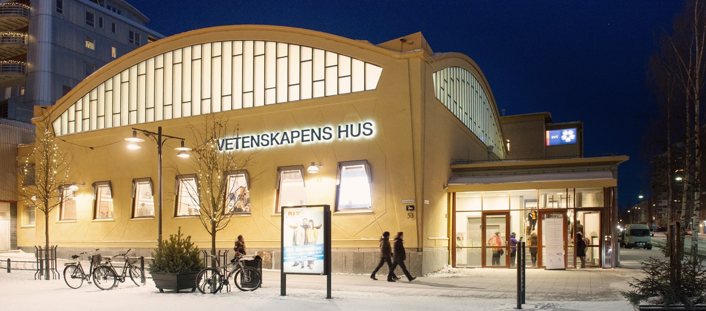
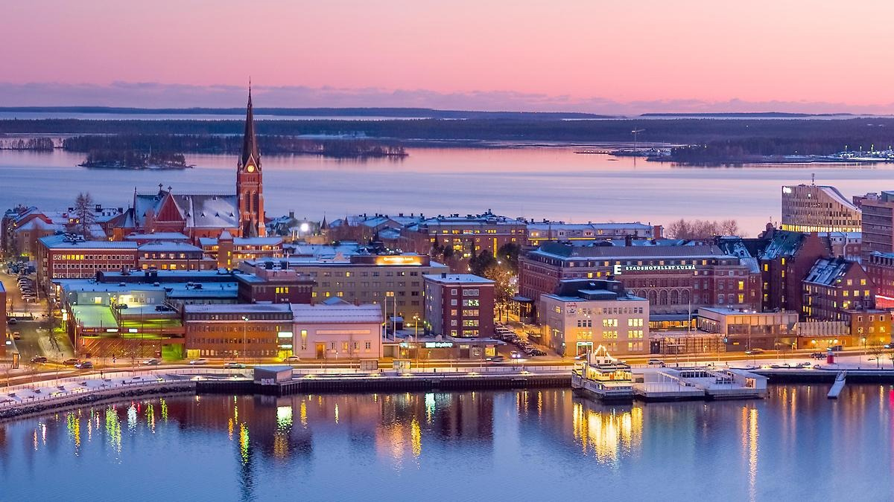
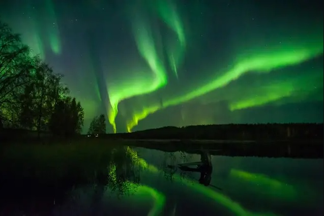

Luleå — local information
Venue
-
Location:
Vetenskapens hus, Luleå
Link to map. Link to more information about the venue. - Getting there: Vetenskapens hus is within walking distance from most hotels in Luleå city centre.
Airport transit
- Between Luleå Airport and Luleå city centre: 15 minutes by bus.
- Schedule for busses are found on https://www.llt.lulea.se/ or use the mobile app called "Luleå Lokaltrafik (LLT)".
- You can pay with international bank cards like Visa/Mastercard when boarding the bus.
Practical notes
- Temperature: expect -10°C in the day. Bring warm clothes for walking in the city.
- Daylight: About 7 hours 9:00 to 16:00.
- Money: International credit cards such as Visa/Mastercard are accepted everywhere.
- Chances of seeing the Aurora Borealis: 40-60% on clear nights.
Pictures

Vetenskapens hus - the venue

Aerial view of Luleå

Aurora Borealis - northern lights